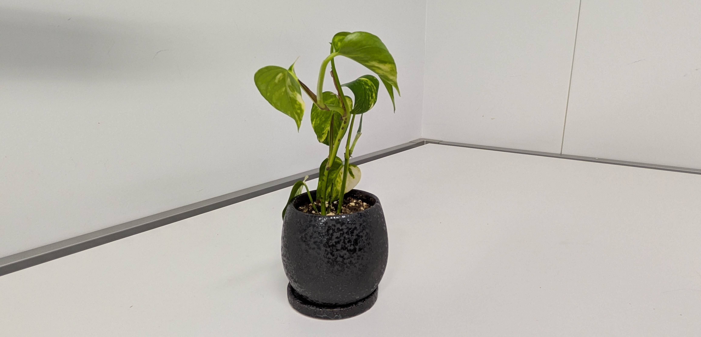

Let our science take root and give fruit.
News
| 2026/4/1 | We are now an official research group! The mathematical catalysis research team is the newest lab in National Institute for Materials Science (NIMS), Research Center for Energy and Environmental Materials (GREEN). |
|---|